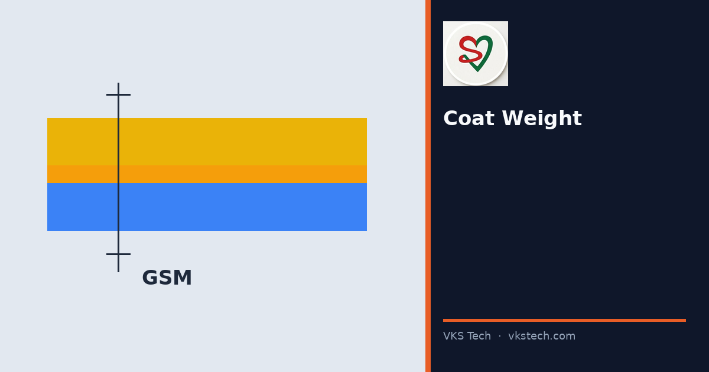
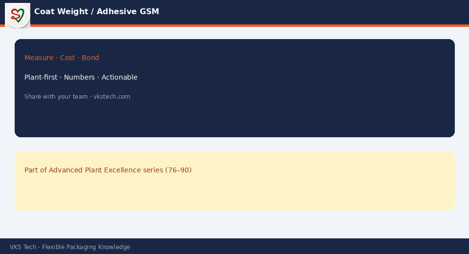

⚖️ Correct Coat Weight (Adhesive GSM) Is the Difference Between Strong Bonds and Delamination or Blocked Rolls. Measure, Log and Control It
📖 11-min read · Process Control · Quality + Lamination Operators + PPC
Adhesive coat weight is one of the few process parameters that directly decides bond strength, appearance and later behaviour of the laminate. Too low and you get weak bond or delamination. Too high and you can get blocking, higher cost, and residual solvent issues. Yet many plants run on “the setting we always use” without regular measurement. Controlling coat weight is high leverage and relatively straightforward.
- Define target GSM (or g/m²) and tolerance for each structure / adhesive
- Measure by gravimetric method (or online system) at defined frequency
- Log results and link them to the job and machine settings
- React when the reading is outside tolerance — do not wait for bond failure
- Include coat weight in the structure trial and first-piece checks

1. Why Coat Weight Matters
| Too low | Too high |
|---|---|
| Weak bond / delamination risk | Blocking risk, higher cost |
| Inconsistent bond across width | Possible residual solvent / odour |
| Customer claims on pack integrity | Harder drying, possible process issues |
2. Practical Control Method
- Target and tolerance — Written for each adhesive and structure family. Not “as per experience”.
- Measurement — Gravimetric (cut, weigh, calculate) is the basic reliable method. Online systems help if calibrated.
- Frequency — At start of job, after major setting changes, and at defined intervals during long runs.
- Recording — Value, time, machine settings, and who measured. Link to the job card.
- Action — If out of range, adjust and re-check before continuing. Investigate repeated deviations.
3. Linking to Bond Strength
When bond fails, the first data to look at is the coat weight record for that job. Many “mystery” bond problems turn out to be coat weight that was never measured or was outside the range that the structure was validated with.
Make coat weight part of the standard lamination start-up and in-process checks. It is one of the highest-leverage controls in the converting chain.
⚖️ सही कोट वेट (एडहेसिव GSM) मजबूत बॉन्ड और डेलैमिनेशन या ब्लॉक्ड रोल के बीच का अंतर है। मापें, लॉग करें और नियंत्रित करें
📖 11-मिनट पढ़ें · प्रोसेस कंट्रोल · क्वालिटी + लैमिनेशन ऑपरेटर + PPC
एडहेसिव कोट वेट उन कम प्रोसेस पैरामीटर में से एक है जो सीधे बॉन्ड स्ट्रेंथ, दिखावट और लैमिनेट के बाद के व्यवहार को तय करता है। बहुत कम हो तो कमजोर बॉन्ड या डेलैमिनेशन। बहुत ज्यादा हो तो ब्लॉकिंग, ऊंची लागत और रेसिडुअल सॉल्वेंट समस्याएँ। फिर भी कई प्लांट “हमेशा वाला सेटिंग” पर चलते हैं बिना नियमित माप के।
- हर स्ट्रक्चर/एडहेसिव के लिए टारगेट GSM और टॉलरेंस परिभाषित करें
- निर्धारित आवृत्ति पर ग्रेविमेट्रिक (या ऑनलाइन) मेथड से मापें
- परिणाम लॉग करें और जॉब व मशीन सेटिंग से लिंक करें
- टॉलरेंस से बाहर हो तो बॉन्ड फेल होने का इंतजार न करें — प्रतिक्रिया दें